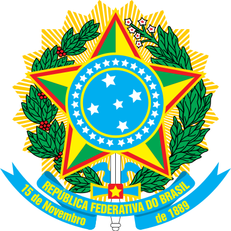
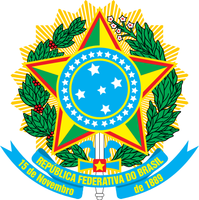
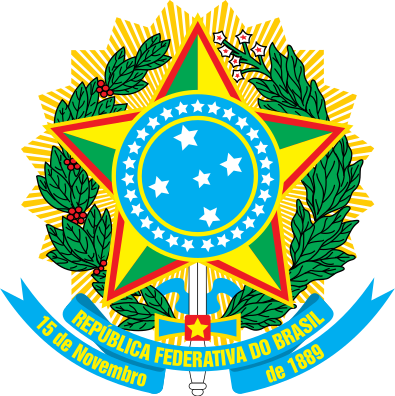
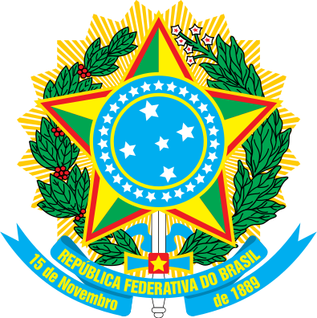

Some of the earliest human remains found in the Americas, Luzia Woman, were found in the area of Pedro Leopoldo, Minas Gerais and provide evidence of human habitation going back at least 11,000 years.
The earliest pottery ever found in the Western Hemisphere was excavated in the Amazon basin of Brazil and radiocarbon dated to 8,000 years ago (6000 BC). The pottery was found near Santarém and provides evidence that the tropical forest region supported a complex prehistoric culture. The Marajoara culture flourished on Marajó in the Amazon delta from 800 CE to 1400 CE, developing sophisticated pottery, social stratification, large populations, mound building, and complex social formations such as chiefdoms.
Around the time of the Portuguese arrival, the territory of current day Brazil had an estimated indigenous population of 7 million people, mostly semi-nomadic, who subsisted on hunting, fishing, gathering, and migrant agriculture. The indigenous population of Brazil comprised several large indigenous ethnic groups (e.g. the Tupis, Guaranis, Gês and Arawaks). The Tupí people were subdivided into the Tupiniquins and Tupinambás, and there were also many subdivisions of the other groups.
Brazil's large territory comprises different ecosystems, such as the Amazon rainforest, recognized as having the greatest biological diversity in the world,[185] with the Atlantic Forest and the Cerrado, sustaining the greatest biodiversity.[186] In the south, the Araucaria pine forest grows under temperate conditions.[186] The rich wildlife of Brazil reflects the variety of natural habitats. Scientists estimate that the total number of plant and animal species in Brazil could approach four million, mostly invertebrates.
Larger mammals include carnivores pumas, jaguars, ocelots, rare bush dogs, and foxes, and herbivores peccaries, tapirs, anteaters, sloths, opossums, and armadillos. Deer are plentiful in the south, and many species of New World monkeys are found in the northern rain forests.[186][187] Concern for the environment has grown in response to global interest in environmental issues.[188] Brazil's Amazon Basin is home to an extremely diverse array of fish species, including the red-bellied piranha.
Brazil occupies a large area along the eastern coast of South America and includes much of the continent's interior, sharing land borders with Uruguay to the south; Argentina and Paraguay to the southwest; Bolivia and Peru to the west; Colombia to the northwest; and Venezuela, Guyana, Suriname and France (French overseas region of French Guiana) to the north. It shares a border with every South American country except Ecuador and Chile.
It also encompasses a number of oceanic archipelagos, such as Fernando de Noronha, Rocas Atoll, Saint Peter and Paul Rocks, and Trindade and Martim Vaz. Its size, relief, climate, and natural resources make Brazil geographically diverse. Including its Atlantic islands, Brazil lies between latitudes 6°N and 34°S, and longitudes 28° and 74°W.
Brazil is the fifth largest country in the world, and third largest in the Americas, with a total area of 8,515,767.049 km2 (3,287,956 sq mi), including 55,455 km2 (21,411 sq mi) of water. It spans four time zones; from UTC−5 comprising the state of Acre and the westernmost portion of Amazonas, to UTC−4 in the western states, to UTC−3 in the eastern states (the national time) and UTC−2 in the Atlantic islands.
The form of government is a democratic federative republic, with a presidential system. The president is both head of state and head of government of the Union and is elected for a four-year term, with the possibility of re-election for a second successive term. The current president is Jair Bolsonaro. The previous president, Michel Temer, replaced Dilma Rousseff after her impeachment.[197] The President appoints the Ministers of State, who assist in government. Legislative houses in each political entity are the main source of law in Brazil. The National Congress is the Federation's bicameral legislature, consisting of the Chamber of Deputies and the Federal Senate. Judiciary authorities exercise jurisdictional duties almost exclusively. Brazil is a democracy, according to the Democracy Index 2010.
The political-administrative organization of the Federative Republic of Brazil comprises the Union, the states, the Federal District, and the municipalities. The Union, the states, the Federal District, and the municipalities, are the "spheres of government". The federation is set on five fundamental principles:[16] sovereignty, citizenship, dignity of human beings, the social values of labor and freedom of enterprise, and political pluralism. The classic tripartite branches of government (executive, legislative and judicial under a checks and balances system) are formally established by the Constitution.[16] The executive and legislative are organized independently in all three spheres of government, while the judiciary is organized only at the federal and state and Federal District spheres.
Brazil is the largest national economy in Latin America, the world's ninth largest economy and the eighth largest in purchasing power parity (PPP) according to 2018 estimates. Brazil has a mixed economy with abundant natural resources. After rapid growth in preceding decades, the country entered an ongoing recession in 2014 amid a political corruption scandal and nationwide protests.
Its Gross domestic product (PPP) per capita was $15,919 in 2017 putting Brazil in the 77th position according to IMF data. Active in agricultural, mining, manufacturing and service sectors Brazil has a labor force of over 107 million (ranking 6th worldwide) and unemployment of 6.2% (ranking 64th worldwide).
The country has been expanding its presence in international financial and commodities markets, and is one of a group of four emerging economies called the BRIC countries. Brazil has been the world's largest producer of coffee for the last 150 years.